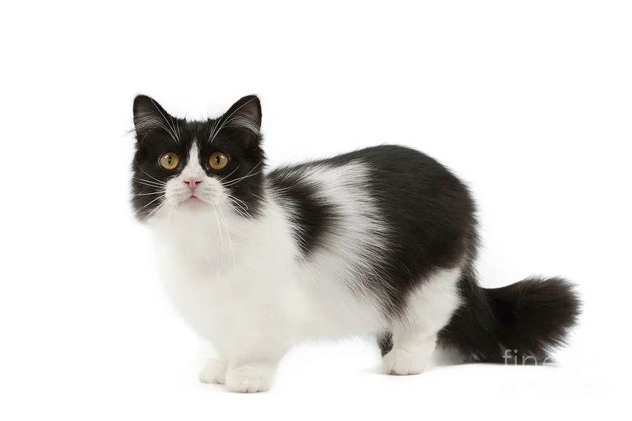
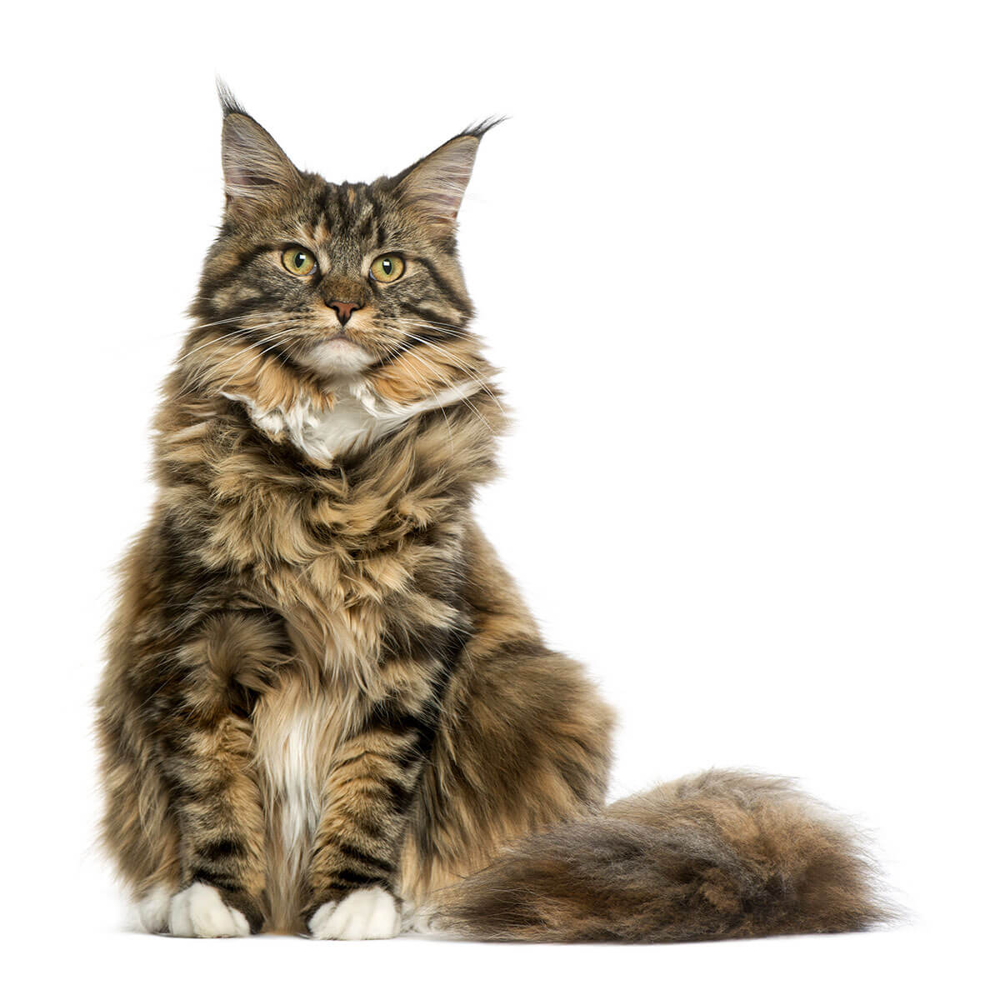
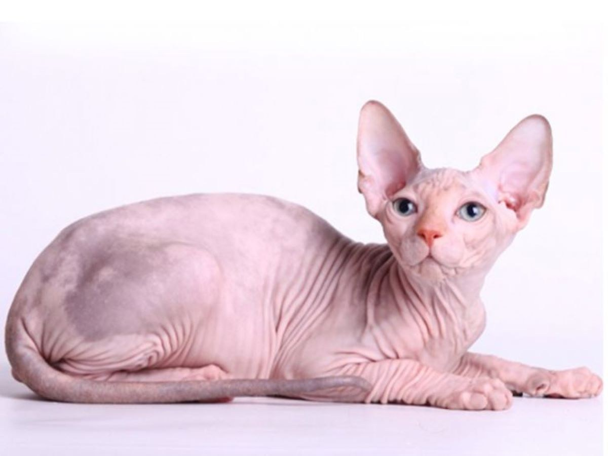

Шотландская вислоухая : У этих кошек загнуты уши , и кажется , будто они испуганы или рассерженны .Но на самом деле они добродушные . Интересный факт : такие кошки известны не только ушами , но и тем , что они могут спать на спине.Еще , они могут сидеть на задних лапах , согнувшись .
Манчкин : Для меня , это самая милая порода.Как вы уже поняли , они славятся короткими лапками . О них , я к сожалению больше не могу рассказать .Хотела бы я иметь такую кошку.
Мейн-кун : Такие породы с первого взгляда бросают меня в дрожь.Их высота составляет от 25 до 41 см , а вместе с хвостом длина составляет 120 см.(длина хвоста до 36см).
Сфинкс : Сфинксы известны тем , что у них нету шерсти .Как они появились?Однажды , обычная домашняя кошка родила голого котенка . Это , как оказалось , было естественной мутацией . Очень интересно , не так ли ? Еще эта порода очень умная.